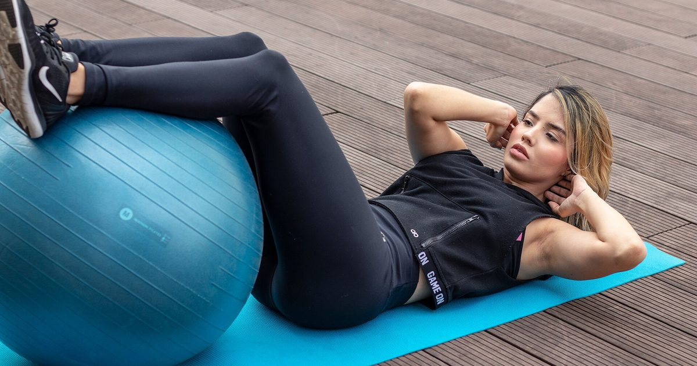

Minimal Gear
Yoga Mat vs Exercise Mat vs Puzzle Tiles
These are three different products solving three different problems, and buying the wrong one is the most common small mistake in home gym setup.

Mats look interchangeable and are not. A yoga mat, a thick fitness mat and a set of foam tiles are optimised for grip, cushioning and coverage respectively, and each is poor at the other two jobs.
Three different problems
Grip. Keeping hands and feet from sliding during held positions. This is what a yoga mat exists for.
Cushioning. Comfort for knees, forearms and spine on a hard floor. This is what thickness buys.
Coverage and noise. Protecting a large area and reducing what your neighbours hear. This is what tiles and rubber mats do.
Most people training at home need the second and third, and buy the first because it is what shops sell.
Yoga mats
Typically 3–6mm, sticky surface, 61 × 173 cm.
Good for: grip. Nothing else grips like a decent yoga mat, and for anything involving held positions where your hands must not slide, it is the right tool.
Poor for: cushioning — 4mm on a wooden floor is barely different from the floor for kneeling comfort. Poor for noise, because the material is thin and not dense. And too small to cover a training area, since your hands land off the end during push-ups if your feet are on it.
Verdict: buy one if you do yoga or a lot of held floor positions. Do not buy one as your general training mat.
Thick fitness mats
Typically 10–20mm NBR foam, 61 × 180 cm.
Good for: comfort. Kneeling, glute bridges, dead bugs and forearm planks all become pleasant rather than something to endure. That matters more than it sounds, because uncomfortable exercises get quietly dropped from sessions — and the ones that get dropped are usually the floor-based core and glute work.
Poor for: stability. Soft thick foam compresses unevenly, which makes single-leg work such as Bulgarian split squats harder to balance on, so balance rather than the leg becomes the limiting factor. Also poor for noise despite the thickness, because low-density foam compresses fully under impact and then transmits as though it were not there.
Verdict: a good general training mat for a hard floor if noise is not a concern. Do not stand on it for single-leg work.
Interlocking puzzle tiles
Typically 10–25mm EVA foam, 60 × 60 cm each.
Good for: coverage, because you buy area rather than a mat-shaped rectangle. Good for noise, because EVA is denser than NBR at the same thickness. Reasonable for cushioning, and stable enough for single-leg work if you choose a firmer grade. They also stack flat for storage — see how to store home gym equipment.
Poor for: grip on the surface, which is usually textured plastic rather than sticky. And the joins can separate under sliding loads, which is mildly irritating.
Verdict: the best all-round choice for a flat, and what I would buy for most people. Cover roughly two metres by one — the reasoning is in how much floor space you need.
Rubber gym mats
Typically 6–20mm dense rubber, sold as tiles or rolls.
Good for: noise, by a clear margin. Density is what dissipates impact energy, and rubber has it. Also excellent for stability and durability, and it will not compress or degrade.
Poor for: comfort, since it is firm. Poor for storage, because it is heavy. And it can have a strong smell for the first few weeks, which in a small flat is a genuine consideration.
Verdict: the best performer if noise is your main problem and you have somewhere to leave it down permanently. The full noise analysis is in exercise mats for noise reduction.
Side by side
| Grip | Cushion | Noise | Stability | Storage | |
|---|---|---|---|---|---|
| Yoga mat | Best | Poor | Poor | Good | Excellent |
| Thick fitness mat | Fair | Best | Fair | Poor | Good |
| Puzzle tiles | Fair | Good | Good | Good | Good |
| Rubber mat | Good | Fair | Best | Best | Poor |
Thickness is what packaging advertises. Density is what actually determines whether your neighbour hears you.
Choosing yours
Carpet, nobody below: you probably need nothing. Carpet with underlay already cushions better than most mats. A yoga mat for grip if you do held positions.
Hard floor, nobody below: a thick fitness mat or puzzle tiles. Comfort is the problem you are solving.
Any floor, neighbours below: puzzle tiles or rubber. Density matters more than thickness, and coverage matters more than either — put it under your hands as well as your feet.
Very small space: puzzle tiles, because you can cover the area you use and stack them away.
You do yoga as well: a yoga mat on top of tiles gives you grip over cushioning, which is the best combination available.
Cheaper alternatives
Rubber-backed carpet tiles, sold for flooring rather than fitness, cost considerably less per square metre and use exactly the right material for noise. Unattractive and effective.
Children's interlocking play tiles are frequently the same EVA foam as fitness tiles, in larger packs, at lower prices. Check the density rather than the branding.
A folded duvet under a thin mat adds mass and dissipation for nothing, though it needs something on top since it slides.
More options in this vein are in the best cheap home gym equipment under $50. And the usual caveat: adult activity guidance asks for muscle-strengthening work covering all major muscle groups,1 and a mat is a comfort and courtesy purchase rather than a training one.
How long mats last, and what kills them
Mats are rarely thought of as consumable, and two of the four types genuinely are.
Yoga mats wear out fastest, usually at the two points where your hands and feet land repeatedly. The sticky surface layer abrades away and the mat becomes slippery precisely where you need grip most. Sweat accelerates it. Expect one to three years of regular use.
Thick foam fitness mats develop permanent compression at the pressure points — knees, elbows, heels — and once compressed they do not recover. A mat with two knee-shaped dents in it has stopped cushioning in the only places that mattered. Two to four years.
EVA tiles and rubber effectively do not wear out from training. Tiles can lose their interlocking teeth if repeatedly separated, so leave them assembled where you can.
What kills all of them faster: UV from a sunny window, heat, and being stored rolled tightly for long periods with the wear surface inward. Storing a mat rolled loosely, or flat, extends its life noticeably.
Cleaning, briefly
Worth mentioning because a mat that smells is a mat you stop using, and that is a training problem rather than a hygiene one.
Wipe with a damp cloth and mild detergent after sweaty sessions, and let it dry fully before rolling or stacking. Rolling a damp mat is how they develop a permanent smell. Avoid alcohol-based cleaners on yoga mats specifically, since they strip the surface layer that provides the grip.
Where to go next
For noise specifically, see exercise mats for noise reduction. For how flooring changes which exercises work, see carpet vs hard floor.
Frequently asked questions
Can I use a yoga mat for general workouts?
You can, but it is optimised for grip rather than cushioning or noise. At 3 to 6 millimetres it provides little comfort for kneeling on a hard floor, and it is too small to cover a training area — your hands land off the end during push-ups.
What is the best mat for home workouts?
Interlocking EVA puzzle tiles for most people, because you buy the area you actually use, they are denser than thick foam mats for the same thickness, they stay stable enough for single-leg work, and they stack flat for storage.
Is a thicker mat better?
Not for noise or stability. Thick soft foam compresses fully under impact and then transmits as though it were not there, and it makes single-leg work harder to balance on. Around 12 to 15 millimetres of dense material is the sensible target.
Do I need a mat if I have carpet?
Usually not. Carpet with underlay already cushions better than most fitness mats and reduces noise transmission. A yoga mat for grip is worth having if you do a lot of held floor positions.
What is the cheapest good exercise mat?
Rubber-backed carpet tiles sold for flooring cost far less per square metre than fitness-branded products and use exactly the right material. Children’s interlocking play tiles are often the same EVA foam as fitness tiles at lower prices.
Sources and further reading
- World Health Organization. WHO Guidelines on Physical Activity and Sedentary Behaviour. 2020.
- NHS. Strength and Flex exercise plan.
- NHS. Physical activity guidelines for adults aged 19 to 64.
- MedlinePlus, U.S. National Library of Medicine. Exercise and Physical Fitness.
Comments
Comments are not enabled yet. Add a hosted comment embed (Disqus, Commento, Giscus) inside this container when you are ready.